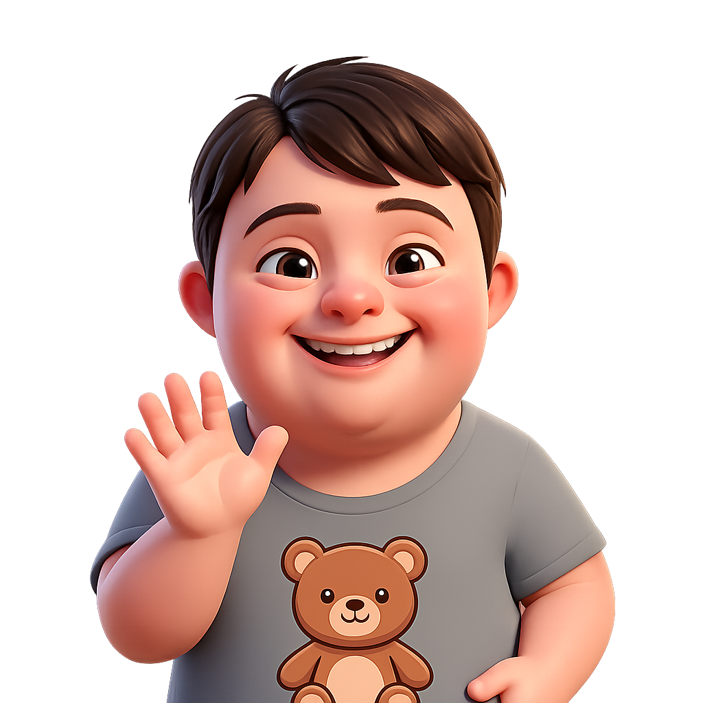
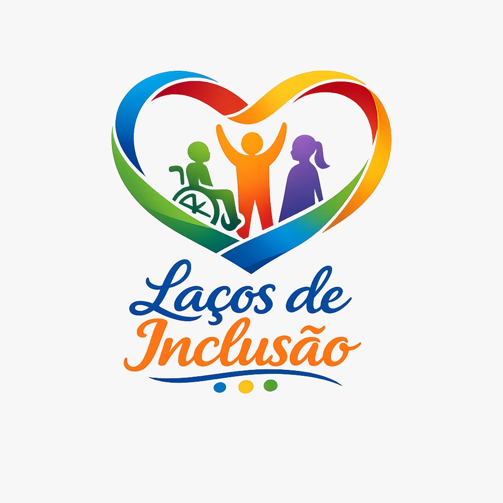

Transporte
Em Curitiba, pessoas com deficiência têm gratuidade no transporte coletivo! O cartão isenção é emitido pela URBS gratuitamente.

Transporte acessível
Pessoas com deficiência têm direito a gratuidade e acessibilidade no transporte público. Em Curitiba, o cartão isenção garante acesso gratuito em toda a Rede Integrada de Transporte (RIT). Além disso, existem benefícios estaduais e federais para transporte intermunicipal e interestadual.
Modalidades de transporte
Cartão Isenção — URBS
Gratuidade no transporte coletivo de Curitiba (RIT) para pessoas com deficiência física, intelectual, auditiva, visual, múltipla e TEA. Renda de até 3 salários mínimos.
Passe Livre Intermunicipal
Gratuidade no transporte rodoviário entre cidades do Paraná para pessoas com deficiência ou doenças crônicas com renda familiar inferior a dois salários mínimos.
Passe Livre Interestadual
Gratuidade em viagens interestaduais de ônibus para pessoas com deficiência de baixa renda. Solicitado pelo site passelivre.antt.gov.br com conta GOV.BR.
Serviço ACESSO
Serviço porta a porta da URBS com microônibus adaptado com elevador para pessoas com mobilidade reduzida que não conseguem usar o transporte convencional.
Postos de Atendimento URBS
Atendimento de segunda a sexta, das 10h às 16h, mediante agendamento prévio. Telefone: 156.
Bairro Novo
R. Tijucas Do Sul, 1700
Boa Vista
Av. Paraná, 3600
Boqueirão
Av. Mal. Floriano Peixoto, 8430
Cajuru
Av. Pref. Maurício Fruet, 2150
Matriz
Pç. Rui Barbosa, 101
Pinheirinho
Av. Winston Churchill, 2033
Portão
R. Carlos Klemtz, 1700
Santa Felicidade
R. Santa Bertilla Boscardin, 213
Tatuquara
R. Olivardo Konoroski Bueno, 100
Links úteis
Cartão Isenção — URBS Curitiba
Passe Livre Intermunicipal — Paraná
Passe Livre Interestadual — ANTT
Agendamento URBS

A inclusão começa com informação e respeito.